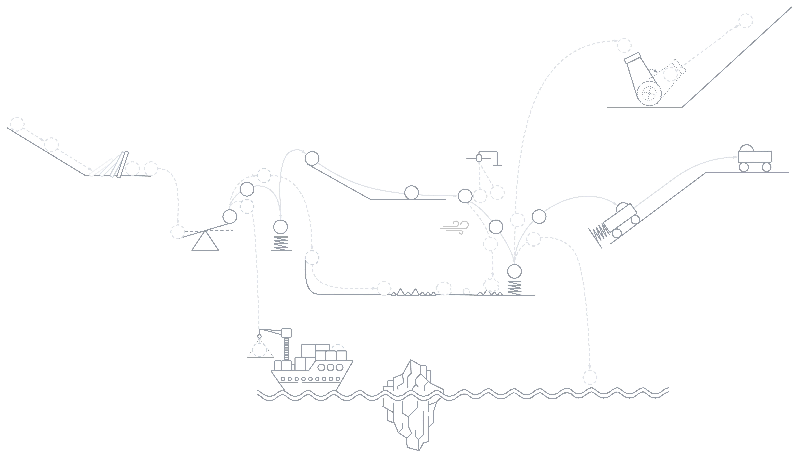

I graduated from the Master of Science in Computer Science program at NYU Courant and have 3 years of experience in training, optimizing, evaluating, deploying, and monitoring machine learning and deep learning models. I am proficient in Python, AWS, Git, Docker, and FastAPI as well as deep learning and agentic AI frameworks like PyTorch, Keras, LangChain, and LangGraph. I also have strong theoretical and mathematical knowledge of a variety of deep learning architectures (e.g., CNNs, RNNs, LSTMs, Transformers, Autoencoders, VAEs, GANs, and Diffusion Models).
